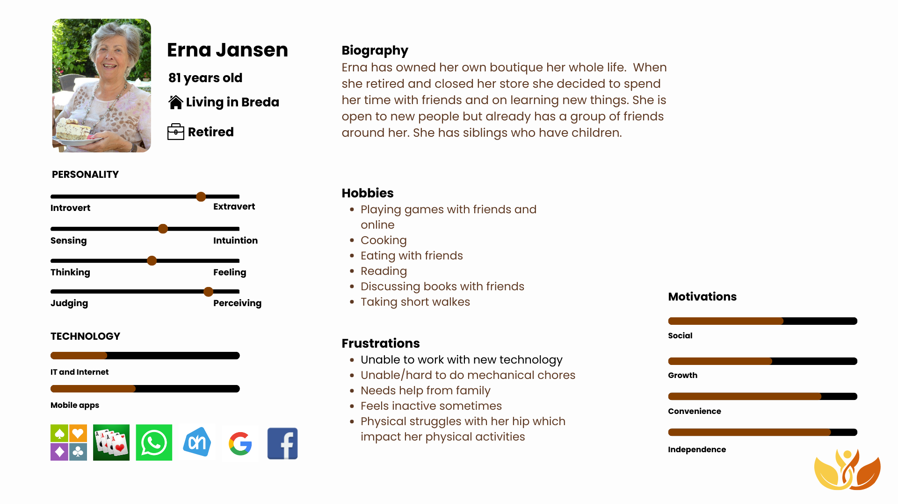

Our service during the workshops
Our workshops take place in a homely room, decorated by us in Utrecht. Don’t imagine a regular classroom. Imagine a living room with comfortable seats. Nice pictures against the walls. Maybe even pictures made of the whole group. That would be fun! We want to make our participants feel like they are home. During our workshops, we introduce the topic of the day and give a small explanation of why this is useful.
What is the process of our workshops? That is a question you may want to ask.
The participants are sitting in groups of four. We give a detailed explanation of how everything is working step by step. During every step, the participants get the opportunity to help each other. After some time, the lecturer will help the groups who need more explanation. We are aware that our participants need their time to master the skills.
We understand that it is also fun to chat about your experiences and about life. Great news! We have multiple breaks to offer. We provide drinks and food during the breaks and even snacks during the workshops. Our participants won’t be going home with an empty stomach. If participants have allergies, we will know of it by their registration and personal information. Their medical conditions are also known by us if there will be any kind of emergency. Of course, it is all under professional secrecy.
At home service on top of that!
After the workshop, we provide the participants with some homework. If needed, there will be personal guidance at home provided by us. They contact us and set a time and date. A colleague from our team will go to help them and guide them with what they need.
Our colleagues have all the necessary training to give the knowledge and support to whoever needs it. We offer all kinds of services. We are not only helping with the homework provided by us, but also with technical problems that occur on a daily basis. After helping them, we also make time to get a cup of tea and have some quality time with them.
“Talking to someone with an open mind is seriously one of my favourite things, because there’s never an end to what you can talk about and learn.”
Additionally, all participants get access to our Microsoft Teams channel where we share not only our knowledge but also personal experiences and stories. With our service, the elderly can have a more inclusive life by being able to talk with whomever they want whenever they want. Just with a click away.
We are looking forward to see you during our workshops! Here is the target we expect:
